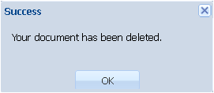

Команда Documents Catalog
Команда Documents Catalog (Каталог документов) используется для вывода в специальном окне Documents Catalog структурированной информации о местоположении всех документов, имеющихся в хранилище.
Окно состоит из двух полей. В левом поле - Domains - показан каталог размещения документов в виде стандартной иерархической файловой структуры. В правом поле - Documents – приведён список всех документов, содержащихся в папке любого уровня, отмеченной в левой части. Documents содержит четыре колонки с русским (Title Rus) и английским (Title Eng) названием документа, его номером (Number) и гиперссылкой, позволяющей получить к нему доступ (Download).

Каталоговая форма хранилища АСХД, представленная в левой части окна, позволяет пользователю самостоятельно осуществлять поиск документов непосредственно в файловой структуре на сервере.
С документами, перечисленными в правой части окна, можно совершать те же операции, что и с документами найденными командой Find (см. Простой поиск): редактирование метаданных, редактирование документа, скачивание документа на локальный компьютер.
Над полями Domains и Documents находится панель меню с кнопками управления.
Кнопка служит для поиска документов аналогично простому поиску. При нажатии на нее повляется дополнительное окошко, в которое вводится слово или словосочетание для поиска.
Кнопка служит для добавления документов. При ее активации открывается дополнительное окно New Document с пустой карточкой метаданных на документ (см. Register).
Кнопка  служит для редактирования метаданных существующих в базе документов. Предварительно нужно определить требуемый для редактирования документ: сначала найти и засветить каталог в поле Domains, в котором документ хранится, а затем в поле Documents выбрать и засветить сам документ.
Название выбранного документа отразится в правой части центрального окошка панели меню, а в левой части окошка будет прописан путь к нему.
служит для редактирования метаданных существующих в базе документов. Предварительно нужно определить требуемый для редактирования документ: сначала найти и засветить каталог в поле Domains, в котором документ хранится, а затем в поле Documents выбрать и засветить сам документ.
Название выбранного документа отразится в правой части центрального окошка панели меню, а в левой части окошка будет прописан путь к нему.
После этого нужно активировать указанную кнопку и в дополнительном окне Edit document раскроется карточка метаданных указанного документа (см.Простой поиск).
Кнопка служит для удаления документов. Предварительно нужно определить требуемый для удаления документ, аналогичным образом как и для редактирования. После нажатия на указанную кнопку Приложение потребует подтверждения от пользователя, а затем удалит документ.
